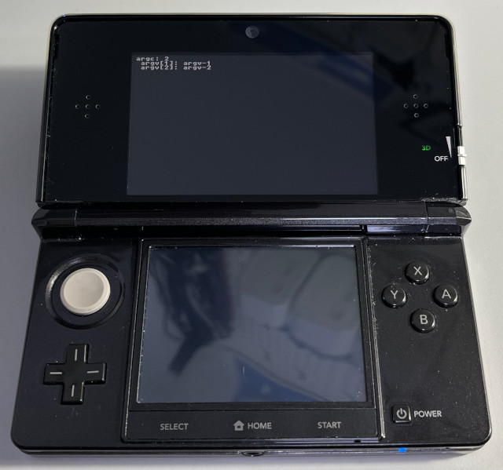

參考資訊：
https://hub.docker.com/r/greatwizard/devkitarm-3ds
main.c
#include <stdio.h>
#include <stdlib.h>
#include <string.h>
#include <3ds.h>
int main(void)
{
Handle hbldrHandle = 0;
svcConnectToPort(&hbldrHandle, "hb:ldr");
const char *path = "/3ds/test.3dsx";
u32* cmdbuf = getThreadCommandBuffer();
cmdbuf[0] = IPC_MakeHeader(2, 0, 2); //0x20002
cmdbuf[1] = IPC_Desc_StaticBuffer(strlen(path) + 1, 0);
cmdbuf[2] = (u32)path;
svcSendSyncRequest(hbldrHandle);
char arg[255] = {0};
arg[0] = 2;
arg[1] = 0;
arg[2] = 0;
arg[3] = 0;
sprintf(&arg[4], "argv-1");
sprintf(&arg[11], "argv-2");
cmdbuf = getThreadCommandBuffer();
cmdbuf[0] = IPC_MakeHeader(3, 0, 2); //0x30002
cmdbuf[1] = IPC_Desc_StaticBuffer(sizeof(arg), 1);
cmdbuf[2] = (u32)arg;
svcSendSyncRequest(hbldrHandle);
return 0;
}
test.c
#include <stdio.h>
#include <stdlib.h>
#include <string.h>
#include <3ds.h>
int main(int argc, char **argv)
{
gfxInitDefault();
consoleInit(GFX_TOP, NULL);
printf("argc: %d\n", argc);
for (int c = 0; c < argc; c++) {
printf(" argv[%d]: %s\n", c + 1, argv[c]);
}
gspWaitForVBlank();
gfxSwapBuffers();
svcSleepThread(3000000000LL);
gfxExit();
return 0;
}
完成
